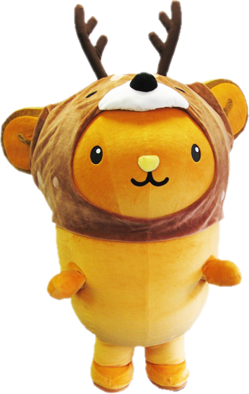

キュンちゃん | 日本ご当地キャラクター協会
本文の保存版（2026-11-22）
出典URL：https://gotouchi-chara.jp/chara/kyunchan/
キュンちゃん
北海道か行

プロフィール
キュンちゃんとは・・・
北海道観光をPRしているキャラクターである。
＞ 性別 ：不明
＞ 出身地：大雪山
＞ 誕生日：不明
ご当地紹介
豊かな自然を誇る北海道は、美しい自然風景のほか、その土地で育まれた海産品・農産品を使用した美味しい料理やスイーツ、温泉、ラフティングや乗馬などの体験など、たくさんの楽しみ方があります。
関連リンク
【公式】北海道の観光・旅行情報サイト HOKKAIDO LOVE!
北海道観光機構が運営する公式観光サイト。大自然が広がる北海道には四季折々の絶景や豊富なアクティビティ、温泉など多くの人を魅了するスポットがたくさんあります。特集記事、観光スポット・体験プラン、イベント、モデルコース、グルメ、宿泊・ツアー予約...
www.visit-hokkaido.jp
ホーム
都道府県
北海道
地図で使用する画像
- キュンちゃんの画像
https://gotouchi-chara.jp/org/wp-content/uploads/2020/03/kyunchan.png